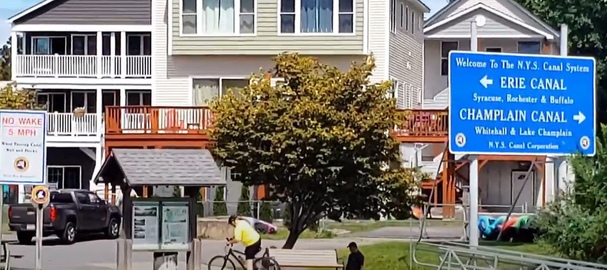

Lock 1: Originally called Lock 1, it has since been renamed and is now called Troy Federal Lock.
Spyder (speaks into the radio): "Troy Lock, Troy Lock. Vessel Dauntless"
Lock Master's (voice on the radio): "Vessel Dauntless, go ahead"
Spyder replies "Vessel Dauntless requesting Northbound passage"
Lock Master's voice on the radio "Dauntless, it's gonna be 10 minutes, maybe 10 or 15 minutes"
Spyder says "Thank you. We'll hold"
The spillway lies ahead, spilling down into our part of the river. We'll be going UP. "Up" and "Down" on a river don't mean the same thing as you would think when you look at it on a map. People assume that North is always "Up" and South is "Down" because North is higher on the map than South. It doesn't always work that way. But, this time it does. We're going North, and up.
There's a red light on the tower; when it turns green, we can approach. After a few minutes, we see water start escaping from the bottom of the lock. A few minutes after that, the lock opens, and the boats start moving out. When they're clear, the light will turn green, and we'll start our approach.
All boats out, the lock is clear, light turns green, we approach at almost idle. And since we're the first boat in, we move all the way to the front of the lock, to make room for anybody that comes in behind us.
Now when you tie in to a lock, you never actually TIE up. You just wrap the rope once around the pole, and physically HOLD IT while the boat goes up or down. It's also a good idea to use old bumpers, cuz they're gonna get banged up as they get dragged either up or down.
The water in the lock swirls and bubbles like something is trying to get out, and the boat and everything in the lock rises. We get to the top, the doors to the lock open, and we depart the lock, slowly, as there's always debris that gets kicked up from the water moving.
We head for the "Flight of Locks". At Waterford we have to make the choice to continue in the Erie Canal, or head to Champlain Canal system. We're going to Champlain.

Scene: Tavern at Lock 12 – Chaos, Pie, and a New Destiny
The Dauntless eased toward Whitehall, the canal narrowing into a flotilla of agitated boaters, all grumbling and blocking the final lock like an angry, floating traffic jam.
Wayne leaned against the railing, surveying the sea of annoyed faces. “We’ll be here till next Thursday.” he complained
Athena’s calm, ever-helpful voice crackled over the speakers. “Captain, if you require refreshments during the delay, there appears to be a tavern facility 47.3 meters northeast.”
Spyder tilted his head. “How far is that in America, Athena?”
Athena (patiently explains) “Approximately 155 feet, or roughly half a football pitch.”
Wayne grinned.“Just point, Athena.”
Spyder’s eyes tracked to the sign for the Tavern at Lock 12, proudly proclaiming itself “Famous for Pie and Regrettable Karaoke.” The scent of cinnamon and desperation wafted through the air, drawing him in.
Inside, the tavern was exactly what you’d expect: sticky booths, a jukebox stuck mid-Bon Jovi, and a pie display case that glowed like a beacon of hope in a world gone mad. The pie lady—hairnet, flour-dusted apron, and a look that said “I can break up a bar fight with a rolling pin”—stood behind the counter.
Spyde
Spyder sidled up with a conspiratorial grin. “How much for every slice you’ve got on display?”
She raised an eyebrow, glancing out the window at the chaos outside.
The Pie Lady asks “You that hungry?”
Spyder says “Nah, just annoyed.”
The Pie Lady grinned, counting the cash he handed over, inquires “What’s the plan?”
Spyder tipped his coffee mug to her: “When I yell ‘free pie from the universe,’ roll ’em out and start slicing.”
Outside – Chaos Meets Pie Diplomacy
Spyder heads back to the boardwalk, clapped his hands and addressed the frustrated boaters with theatrical flair, “Ladies, gents, and everybody stuck in this floating purgatory—who wants something for nothing?”
Suspicion rippled through the crowd like a wave. Boater heads swiveled, suspicion blooming into cautious hope.
Random Boater: “What’s the catch?”
Spyder threw his arms wide, grinning like a game show host, “No catch. Just a little gift from the universe. FREE PIE!”
At that precise moment, the tavern doors swung open, and the pie parade began. Steaming, golden slices rolled out on trays held high by the grinning pie lady, her staff, and what appeared to be a confused dishwasher. The aroma hit the crowd like a tranquilizer dart.
Arguments melted. Plates were grabbed. Forks raised in sticky, gooey truce.
Wayne, watching the chaos dissolve into a sugar-fueled peace treaty, shook his head “Are you ever going to explain how you do that?”
Spyder, grinning as he programmed new GPS coordinates into the Dauntless plotter, replied “It’s not magic—it’s just a knack for noticing what everyone’s really hungry for.”
Vanessa, leaning casually against the railing, deadpan as ever, “Is that why this boat is now heading to Florida, Vermont instead of, you know, Florida?”
Spyder attempted to look innocent and failed spectacularly, “Well, sometimes the universe is in the mood for a detour. Better check the pie supply.”
Spyder's Rule #9 “Spyder's Rule #9: When tension spikes, sugar wins.”